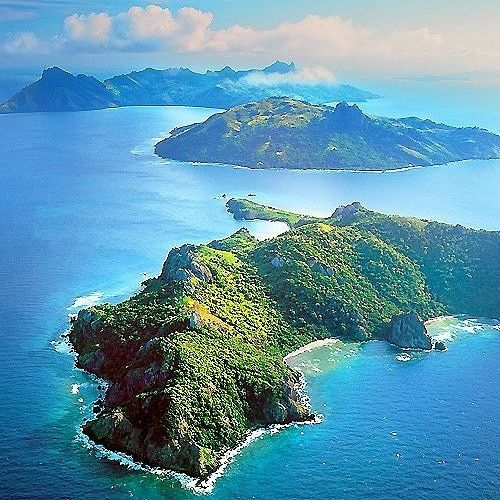
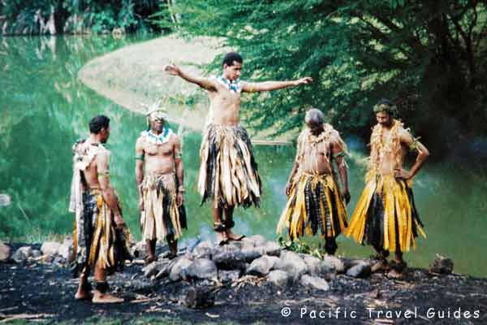
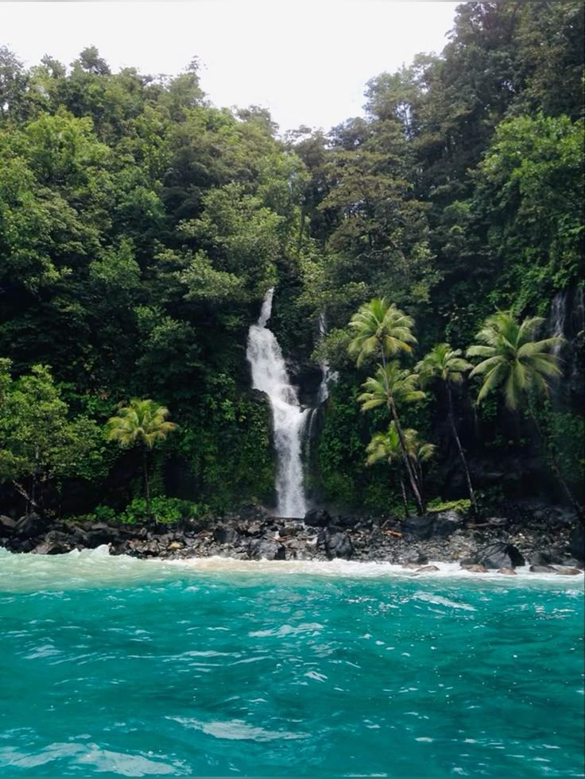

Yasawa Islands
The Yasawa Islands are famous for clear water, beaches, and quiet resorts.
Reference: Pinterest

Fire Walking in Beqa
Firewalking in Beqa is a legendary 500-year-old cultural ritual native to the Sawau tribe on Beqa Island, Fiji. According to local lore, a tribal ancestor named Tuinaiviqalita gained the gift of fire control from a spirit god. Today, descendants of this bloodline perform the ritual, stepping barefoot across scorching white-hot stones in deep fire pits without sustaining burns.
Reference: Pinterest

Wainibau Waterfall
The 10-km (roundtrip) Lavena Coastal Walk starts at Lavena Village and weaves its way south along Taveuni's rugged coast to beautiful Wainibau Waterfall. Part of the Bouma National Heritage Park, this (mostly flat) well-worn track teems with vibrant flowers, native birds, a rope-assisted river crossing and countless beaches and lagoons.
Reference: Pinterest